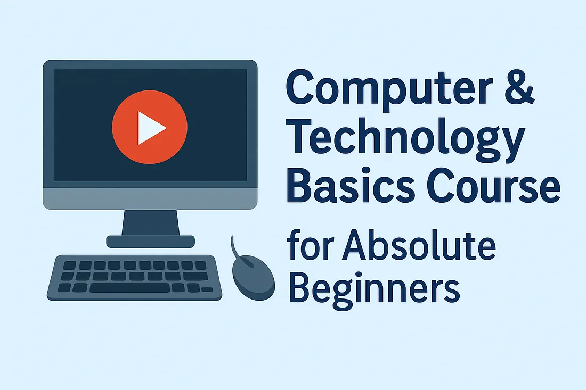

Four lessons from working on the Apple Vision Pro team.
As an AR/VR engineer working on VisionOS for the past two years and experiencing firsthand the breathtaking magic that is the VisionOS spatial computing platform, I can say this with the utmost confidence.
Read More
How Generative AI is Reshaping the Roles of Business and Data Analysts
The age of Generative AI is not just about creating content. It’s about creating context. And that changes everything for analysts.
Zoom image will be displayed
Read More

Computer & Technology Basics Course for Absolute Beginners
An electronic device that manipulates information using hardware (physical components) and software (programs like browsers and media players).
Read More
it’s 2025 — So Why the Hell Are Java Threads Still This Heavy?
It is 2025, and Java still acts like every thread is a precious artifact shipped from a museum.
Read More